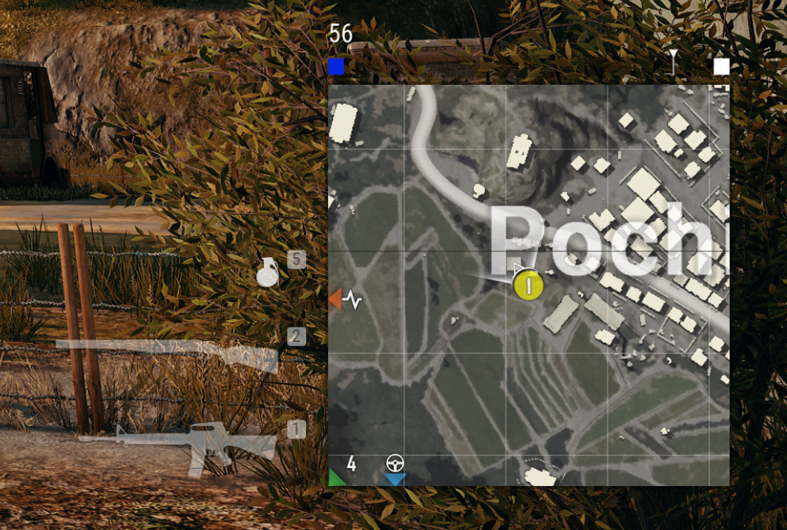
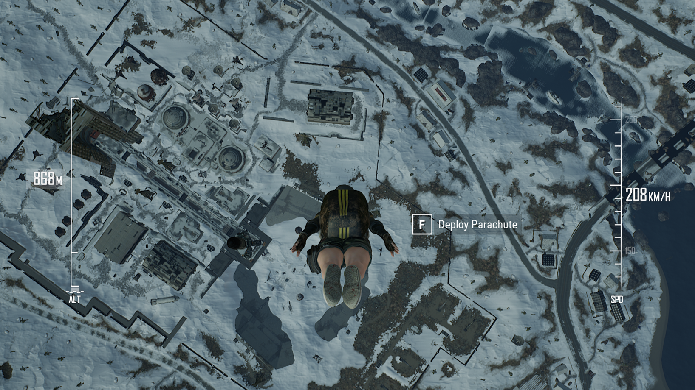
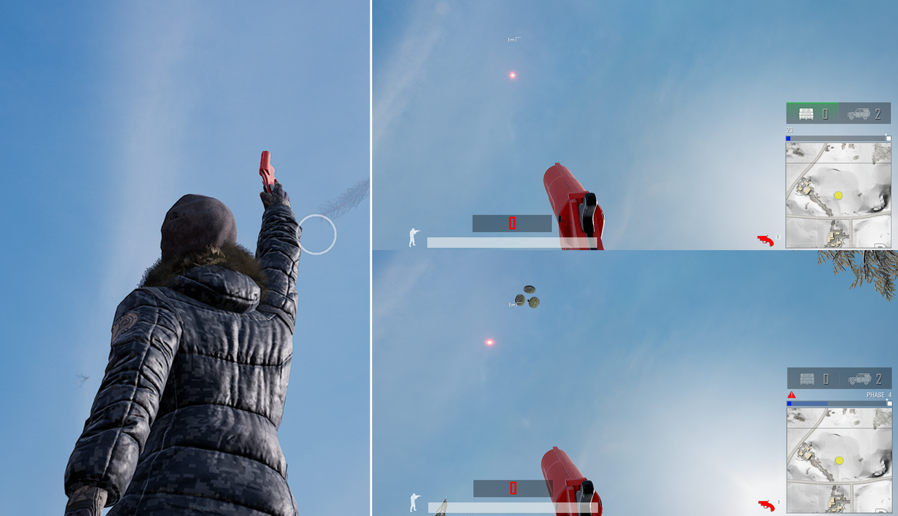
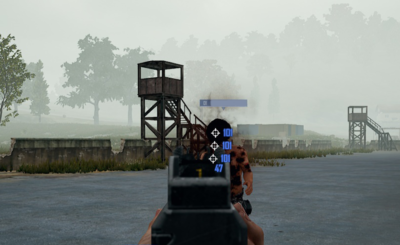
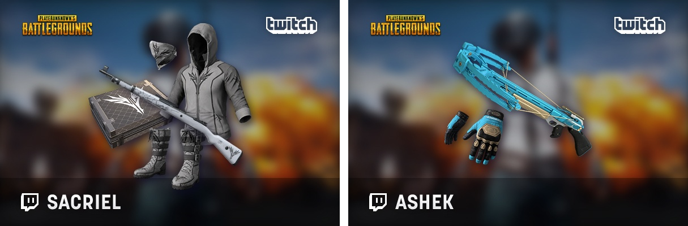
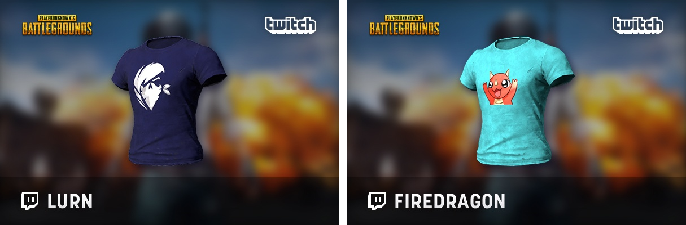
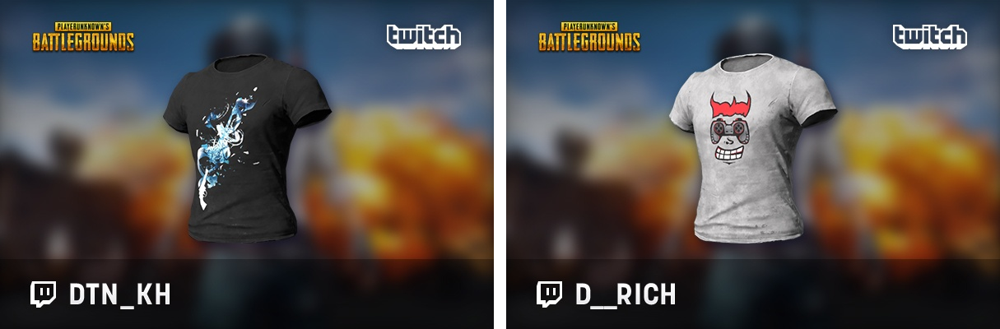
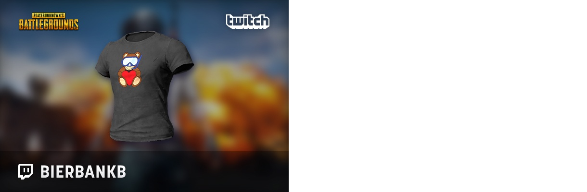
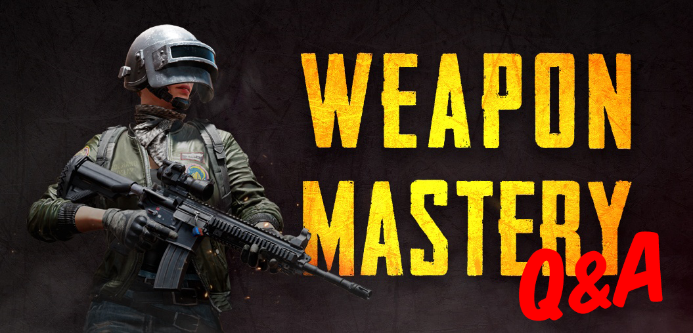

This update has a lot of exciting additions and balances. Tactical Map Markers have been added for better communication between Squad and Duo teams. We’ve added more spawn kit options in Custom Matches and Camp Jackal as a playable map in War Mode: Conquest. Our largest focus in this patch was rebalancing aspects of Vikendi. Following feedback on our first round of Vikendi rebalancing, we have tweaked the spawn rates to better equip players for long range fights.
In addition to info on the updates, with Survivor Pass 3: Wild Card winding down we’ve got details on how long you have to collect your XP and rewards, so definitely jump in there for the last few weeks and complete as many missions as you can.
We’ve got several new UI improvements and general Quality of Life improvements across the game. You can get all the details on the changes and additions made in Update #29 below.
Mid-Update Bugfixes
05/23/2019
Fixed an issue where killfeed messages appear inaccurate when a player is killed by frag grenades in certain conditions.
Fixed an issue where sometimes characters appear to be floating above the ground while running.
Fixed an issue where sometimes players located near the water do not receive damage from frag grenades exploding in the shallow water near them.
Survivor Pass 3: Wild Card
End-date of Survivor Pass 3: Wild Card
Survivor Pass 3: Wild Card will end on June 5th, when live servers enter maintenance.
You will have until June 26th to claim earned rewards and purchase items from the coupon shop. See the Grace Period section below for more information.
Premium Pass and Level Up Tickets can only be purchased and up until live server maintenance on June 5th.
Time remaining for the Survivor Pass will be displayed in-game for two weeks prior to the end-date.
When purchasing Survivor Pass Premium, players will be shown the pass end date to confirm whether they want to purchase the pass.
Results Summary
Once the Survivor Pass 3: Wild Card ends, you can view your achievements and detailed information about acquired rewards, levels achieved, and mission status on the results page.
Additional information:
You can check your achievement completion percentage for each mission type (Daily, Weekly, Beginner, Premium) from the Missions tab.
You can view the total amount of rewards acquired on the Rewards tab.
Grace Period
There will be a grace period for claiming rewards and XP once the Survivor Pass ends, from June 5 until June 26 (prior to Live Server maintenance).
Level-Up tickets cannot be used during the Grace Period (after the pass ends) but will remain in your inventory and available for use during future passes.
XP for completed missions can be claimed by using the Claim All button until June 26 (prior to Live Server Maintenance).
Coupon Shop will be open until June 26 (until Live Server maintenance).
Remaining coupons will expire once the Coupon Shop is closed.
Gameplay
Vikendi 2nd Rebalance
With this update we made Vikendi a more balanced sniper haven with increased long guns and the addition of the MK47 Mutant for that extra burst of firepower. Getting through all those snipers will be a bit easier with better cover, which the extra 4-wheel drive vehicles will provide better than snowbikes. Read on for more details about the Vikendi rebalance.
Blue zone adjustments
To support a wider variety of gameplay experiences around Vikendi, the initial safe zone will now be placed in more varied locations and the waiting time between certain blue zone phases has been reduced.
Phase 1 safe zone now spawns in more varied locations.
Waiting time between early and late blue zone phases has been decreased slightly.
Overall match duration subsequently reduced by 1 minute and 30 seconds.
Vehicle spawn rate adjustment
Vehicle spawn rate has been changed to facilitate the new blue zone settings.
Increased four-wheel drive vehicle spawn ratio in relation to Snowbikes and Snowmobiles.
Item spawn rate adjustment
We have adjusted weapon spawn rates to help facilitate more medium and long-range engagements. Adjustments to available attachments have also been made to offer players more options.
Adjustments to item spawns on Vikendi:
AR spawns increased by 1.4x
DMR spawns increased by 2x
SR spawns increased by 7x
SMG, Shotgun, Pistol Crossbow and spawns have been decreased slightly.
Attachment spawns have been increased slightly.
High powered scope spawns have been increased slightly.
Cave balance adjustment
Since the Secret Cave is no longer much of a secret, we have adjusted the loot within to balance it more closely to other areas of Vikendi to improve the gameplay experience, while still offering good loot.
Care Packages will no-longer spawn in the cave.
High quality non-crate loot will still spawn in this location.
Increased variety of items spawned in the cave.
Item pool changes
Added MK47 Mutant, Halfgrip, Thumbgrip and Laser Sight.
Removed Win94 and R45.
Increased Moonlight weather condition percentage.
General Gameplay
Grenades can no-longer be thrown through wire mesh (most notably, wire fences)
Tactical Map Markers
Added new Tactical Map Markers with 6 different marker types for different situations (Attack, Danger, Defend, Loot, Regroup, Vehicle).
To use the markers, open the world map and hold right click to reveal the Tactical Map Marker wheel, then move to the desired icon then release.
Each player can only place one Tactical Map Marker or Standard marker at a time.
Tactical Map Markers will be shown on the world map, minimap, and compass in the same way as the existing map markers.
Throwables Crosshair Improvement
Added new crosshair when using throwables to easily identify the use of overarm or underarm throwing stance.
Minimap improvements

Teammates outside of your immediate minimap area will now have their icon and status shown at the at the edge of the minimap. This will help more easily identify the direction and status of your teammates.
Parachuting UI Improvements

The parachute UI has been improved, made more visible and divided into two gauges, one for current speed and the other a more detailed altitude gauge.
Improved teammate status UI
An icon has been added to show when teammates are freefalling from the plane.
Teammates’ status icons during the parachuting phase which were previously only shown on the map, are now also shown at the bottom left of the screen alongside the other teammate UI.
Flare Gun UI Improvement

Changed the Flare Gun crosshair to display as a circle when aiming at the correct position to successfully call in a Special Care Package or Armored UAZ.
Adjusted the Flare Gun status UI displayed after calling in a Special Care Package or Armored UAZ.
The green flashing light is now removed once the drop leaves the plane.
Previously, it would remain until the drop had been on the ground for 30 seconds.
Custom Match
Added Spawn Kit Selection Option
We’ve added a variety of Spawn Kit options for Custom Matches to give players more robust customization options.
Added Spawn Kit selection option to War Mode, War Mode: Conquest and Normal Mode in Custom Matches.
When using the Platoon team mode, an option has been added for each platoon to play using a different kit.
Spawn Kit Selection options
War Mode, War mode: Conquest
Original Kits
AR, Shotguns, SMG, Western, Overpower, Handguns
Utility Kits
War Mode Kits: There are 4 kits that include each items based on each concepts.
Assault: M416, R1895, Lvl 1 Helmet & Vest, Ammo, Bandages
Medic: UMP, Sawed-off, Lvl 3 Helmet & Vest, Ammo, First Aid Kit, Med kit, Painkiller, Adrenaline Syringe, Critical Response Kit
Support Kit: Critical Response Kit, Mechanic’s Toolbox
New Custom Match Spawn Kit Items
The Critical Response Kit and Mechanic’s Toolbox are being added exclusively for use through Spawn Kits in Custom Matches. These items cannot be found in standard matches.
Added Critical Response Kit and Mechanic’s Toolbox to newly added kits. (Custom Matches Only)
Critical Response Kit – Having this Kit and reviving teammates as usual will get them up much faster than traditional reviving without the Kit.
Mechanic’s Toolbox – Using this toolbox in a vehicle will repair a certain amount of vehicle health.
Added Camp Jackal map to War Mode: Conquest
Players can now select Camp Jackal (Training Mode Map) for War Mode: Conquest in Custom Matches.
Observer Feature Improvements
Player List UI Improvements
Kick and Report buttons now have icons.
X icon is Kick and Caution icon is Report.
Report button can be viewed in the player list when watching match replays.
Damage UI Improvement

Improved the font of damage indicators while observing.
UI/UX
Store Item Preview UI Improvement
When previewing an item set which contains multiple items, the preview is divided into three categories to better view the items: Character, Weapon and Parachute.
Select a specific item from the set to preview an isolated zoomed in version of the image.
All set items can be equipped and unequipped while previewing.
UI Improvement to Prevent Potential Unfair Advantage while Spectating
If houses and other map objects aren’t completely loaded when spectating teammates, additional UI will now cover the screen to prevent seeing players that wouldn’t otherwise be seen.
Once loading is complete, the additional UI will be removed.
Lobby UI Improvement
Improved the appearance of icons that looked blurred in 4K resolution.
Removed third-party account linking button in the top right corner of Lobby.
World
Removed all FACEIT Global Summit signs and banners from Vikendi and Sanhok.
Replay System
The replay system version has been updated. Existing replays recorded prior to this update are no longer playable.
Bug Fixes
General
Fixed an issue where players could take excessive damage or die when landing at specific locations.
Grenades can no-longer be thrown through wire mesh (most notably, wire fences)
Fixed an issue where the screen would shake when ADS and leaning against a wall or the corner of objects.
Fixed an issue where the game mode would sometimes change when making a team.
Fixed an issue where some bullets could pass through a wall when firing in specific conditions
Fixed an issue where the players list would display abnormally when selecting a custom match in the replays list.
Fixed an issue with a vehicle that slipped more than intended while driving.
Fixed an issue where the safe zone circle UI would not display correctly under specific circumstances.
Fixed an issue which caused the patch notes to close when clicking a blank area of the notes.
Fixed an issue which prevented healing items from being used when holding a weapon and performing an emote.
Fixed an issue which allowed some unintended weapon types to be used from the back seat of an Aquarail.
Fixed an issue where equipping/unequipping pistols played the sound twice.
Fixed an issue causing the animation while cooking a grenade from being reset when opening the inventory.
Fixed an visual issue with the chocoTaco parachute skin for female characters which prevented some elements from appearing on the backpack.
Fixed an issue where the game result screen would freeze for 2-3 seconds in custom match Esports mode while observing.
Fixed an issue where loading UI would not display while spectating and switching to a player located more than 1km away.
Fixed an issue where the Tactical Map Marker would not work while observing after a player died.
Fixed an issue where the animation would not work when reloading while affected by a Stun Grenade.
Fixed an issue where teammates UI icons are not applied the priority by their distance when they overlapped from outside of the minimap.
Fixed an issue where post-match screen was displaying incorrectly in zombie mode custom matches.
Fixed an issue where teammate nicknames and kills were displayed in an incorrect order in post-match screen of a custom game.
Fixed an observer issue where a moving player appeared to be floating when spectated intermittently.
Fixed an issue which prevented players from being able to place markers around the boost UI.
Fixed an issue where an error message is output when attempting to replace a cooked throwable with a throwable in the inventory.
Fixed an issue where players were able to auto-move forwards in vehicles & parachutes by opening the system menu.
Broadcaster Royale Twitch Streamer Skins: Group 7
Our 7th batch of skins repping your favorite Twitch streamers have arrived
Our 7th batch of skins repping your favorite Twitch streamers have arrived. Since we’ve made it to the seventh phase of Broadcaster Royale skins, seven streamers have items available including Sacriel’s Crate ($20.99) with all four of Sacriel’s items.
Twitch personality skins are available between $2.99 – $9.99 each and can be purchased until 6/11 PDT until before the live server maintenance starts through in-game store. Each sale directly benefits your favorite Twitch streamer, so pick up their weapon and item skins to support them in-game and out!
This group’s streamers includes:
Ashek • Sacriel • Lurn • FireDragon


DTN_KH • D_Rich • BierbankB


Weapon Mastery Q&A and Reddit AMA Recap

Hello Players!
On April 22nd, our Weapon Mastery team descended on Reddit’s /r/PUBATTLEGROUNDS subreddit for an AMA (Ask Me Anything) about the new progression system they developed. Members of PUBG’s Mastery team had a blast getting your feedback and fielding questions about the new rewards and mechanics the Mastery system brings to the game. Questions ranged from finding out how a player can earn medals to bypassing asking a question at all and suggesting what charms should come next for players that max out their armory.
While you can read the full AMA on Reddit, you can get an in depth look at our new progression features through our Introduction to Weapon Mastery here or check video below.
Below you’ll find a rundown of the most frequently asked questions and a preview of what the team is working on to add to Weapon Mastery in the future.
Q. What are Charms?
A. Charms are keychain-like trinkets that attach to the left side on the barrel of each weapon. You can equip and see which charms you have unlocked from inside the Mastery tab.
Q. What’s an emblem?
A. Each weapon has a tier emblem that serves as a visual shorthand for your current level. These tier emblems get fancier every 10 levels.
Q. Do I have to buy a season pass to earn charms through Weapon Mastery?
A. Weapon Mastery is an included feature in the PUBG experience. It is not seasonal and updates will not be tied to Survivor Passes.
Q. Do Charms and Tiers have a time limit to reach them?
A. Nope! No time limit to unlock charms or level up tiers, Weapon Mastery is a permanent system with no resets. Oh.. and all Weapon Mastery rewards are free to earn and cannot be purchased.
Q. Can I choose where the charm appears on my weapon?
A. Nope! No time limit to unlock charms or level up tiers, Weapon Mastery is a permanent system with no resets. Oh.. and all Weapon Mastery rewards are free to earn and cannot be purchased.
Q. Is getting mastery levels on certain weapons easier?
A. We have made an effort to balance Weapon Mastery in such a way that progression will be equal for all guns. It’s not about which weapons are better, but which weapons you use and enjoy putting time into using.
Q. When a player maxes out a weapon will all stats be wiped and I’ll have to start over?
A. Weapon Mastery progress will not be wiped.
Q. Since Weapon Mastery is a feature that allows players to check their gun stats and earn rewards based on their skills, will others be able to actually see this “skill” I have or is it personal and hidden from others?
A. We designed a system that allowed you to show off these items to other players, but it didn’t feel quite right. We held off on shipping it while we go back to the drawing board to think of better ways to display your emblems to your friends, and maybe even your enemies. Giving players the opportunity to show off their accomplishments and personalize their looks are very high on our priority list.
Q. Am I going to be matched with the players who are at the same mastery level with me?
A. Mastery level will have no effect on matchmaking.
Q. When can we expect it on Xbox and PS4?
A. Weapon Mastery is in development for Xbox and PS4 and we’ll get it into your hands as soon as we can. An announcement will be made via official channels closer to the release.
We would like to say thank you to everyone that participated in the AMA event. We also appreciate those players who have sent meaningful questions and feedback to us via various community channels all around the world. The Mastery Team will continue listening to your feedback to perfect Weapon Mastery. The entire team at PUBG hopes to keep making the game and new features as enjoyable and rewarding as possible.